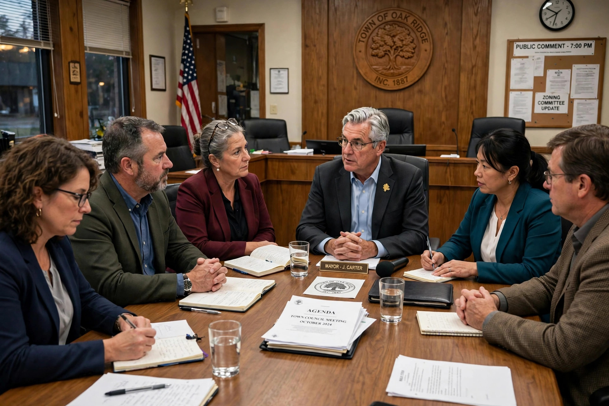

A town council is the governing body of a town, composed of elected councillors who make decisions on local services, budgets, bylaws and planning matters. Town councils form the tier of local government closest to residents in many countries, though their powers vary widely by jurisdiction.

Councillors seated around a table at a town council meeting.
In England, town councils are a type of parish council serving towns; they are the lowest tier of local government, responsible for amenities such as allotments, parks, war memorials, community centres and some street lighting, funded by a precept added to council tax. In Wales the equivalent bodies are community councils, some of which style themselves town councils. Town councils are chaired by a mayor or chairperson, and in some historic towns the mayor is a prominent civic figure, distinct from the executive mayors of larger authorities (see strong mayor).
In the United States, town councils (or town boards) govern incorporated towns, particularly in New England, New York, Indiana, and Wisconsin, passing local ordinances, setting tax rates and overseeing town departments; in much of New England, legislative authority also rests with the open town meeting. In Canada, town councils are elected municipal governments headed by a mayor, governing towns as distinct from cities, villages, and rural municipalities.
Local government handbooks for England, the United States and Canada.